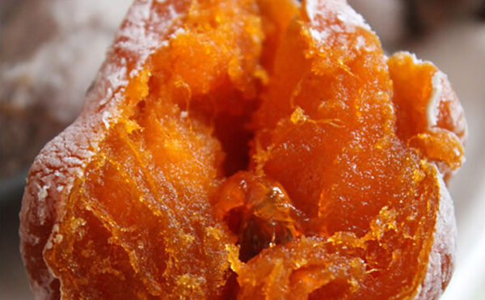

首页 >> 山东特产临沂农家自制柿饼
我的家乡山东临沂沂蒙山区的柿子沟，这里的柿子产量位居全市首位，是有名的山东特产，柿饼的制作经过手工采摘、精选、配合传统工艺完成。 土法手工制作，没有任何添加剂，今天就为大家介绍极具北方特色的零食——临沂农家自制柿饼。

山东临沂是一个多山的城市，沂蒙山区有大大小小300多座山，几乎所有的山沟中都种满了柿子树， 山区土地无化肥农药，矿物质含量高，适合柿树生长，种出的柿子甜，含糖量高。

山东临沂沂蒙山区的柿子沟，村边、山上、溪水旁、那些高耸的野生柿子树，叶子己经全部掉落，只有挂满枝头那些红红的柿子，成为深秋一道亮丽的风景。沂蒙山区大大小小300多座山，几乎所有的山沟中都种满了柿子树，这是中国北方有名的柿乡。满山的柿子树，就为柿饼的制作提供了最主要的材料。
挑果员会将较熟的和偏生的搭配打包发货，为的让你分批次的吃货，百香果放放皮皱会更甜，有时候外表皮有点发霉，但是切开后内瓤一般都会更香甜。
透明是最好的防腐剂，我们做出以下努力来改进自己，每天最大限量选出500份百香果，因为好东西总不是无限产出的。给选果员编号并对应其所选果子的包装盒编号，因为一旦责任到具体个人，每个人都会紧张应对。
百香果越皱则越甜，因为经过长途运输，它会蒸发表皮水份，导致表皮皱纹和萎缩，反而会导致糖度转化增加甜度，除非内瓤出现坏死，其它的都可放心食用。
土法手工制作的柿饼，没有任何添加剂，是山东临沂柿饼传统制作工艺的经典传承。柿饼有生津润肺的功效，并能补充人体所必需的养分和细胞内液，柿饼中含有多种维生素和碘，可以软化血管，降低血压和改善心脑血管的功能。
土法手工制作的柿饼，没有任何添加剂，是山东临沂柿饼传统制作工艺的经典传承。柿饼有生津润肺的功效，并能补充人体所必需的养分和细胞内液，柿饼中含有多种维生素和碘，可以软化血管，降低血压和改善心脑血管的功能。

临沂自制柿饼流程：摘柿一挑选一去皮一晾晒。所有过程都是手工操作，保证饼柿的传统纯正风味。
摘柿子可是项繁重危险的工作，有的树龄大了，要爬的很高，从树上摘回来的柿子，要一个个的挑选，这是非常枯燥重复的过程，但是在山里人的手里却变成自然而轻松。
挂柿也是件辛苦的事情，因为比较高胳膊一会儿就会酸痛，一般人吃不消这样的苦，因此很多人选择了在地上晾晒，那样即省时又省力，但不卫生，通风也不好，柿饼口感也会差，所以我们一直都用这种最原始的方法，让大家吃上最好吃的柿饼，最原始的味道，才会让人回味无穷。
我们有着原生态有机土壤，这里有着多种促进作物生长的矿物质，只有这样的土壤才能产出优质的柿饼；种植区的土地必须要靠大量化肥的补充才能生长。
我们用的传统的挂柿晾晒，选光照充足、空气流通、清洁卫生的地方，防露水，雨天要防雨；而大部分商家的晾晒方法，这样通风差，软硬度会有差别。